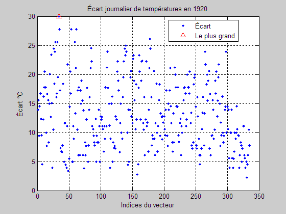
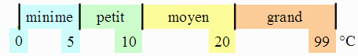

L'objectif est d'utiliser les boucles for et manipuler des indices de vecteurs. Dans cette optique, les fonctions while, vectorisation, mean, max, min, sum, etc. ne peuvent pas être utilisées.
Le script doit s'exécuter correctement dans la fenêtre de Matlab et permettre aussi Publish to html. La fonction input n'est donc pas utilisable.
Utiliser Gabarit.m pour répondre.
Quatre fichiers xls de données météo annuelles similaires sont accessibles pour la mise au point du script. Examiner ces fichiers. Comme les données non valides ont été retirées, il n'y a pas nécessairement 365 jours de données par an. Les noms de variables demandés sont obligatoires.
Constituer le vecteur Ecart contenant
l'écart journalier entre les températures maximale et minimale pour l'année. Tracer le vecteur
Ecart en fonction des indices.
Rechercher l'indice du jour où est observé l'écart le plus grand entre les
températures maximale et minimale. Ce jour est unique dans chacun des fichiers
de données.
Écrire hold on et ajouter ce jour sur le graphique à l'aide d'un triangle
rouge. Documenter le graphique comme ci-dessous.

Classer les écarts journaliers de températures de l'année en quatre groupes.

Chaque classe contient la borne de droite.
Écart de températures – classification minime : 17 jours petit : 97 jours moyen : 169 jours grand : 52 jours
Déverminer un programme fait partie des compétences à acquérir dans le cours. Un script qui plante est noté zéro.